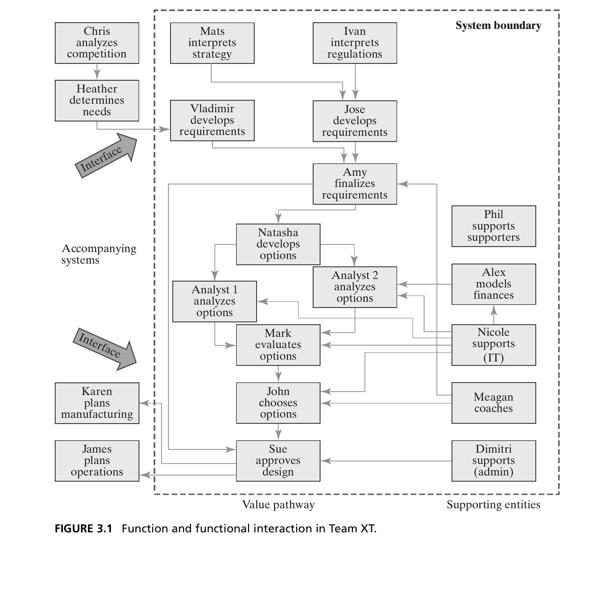
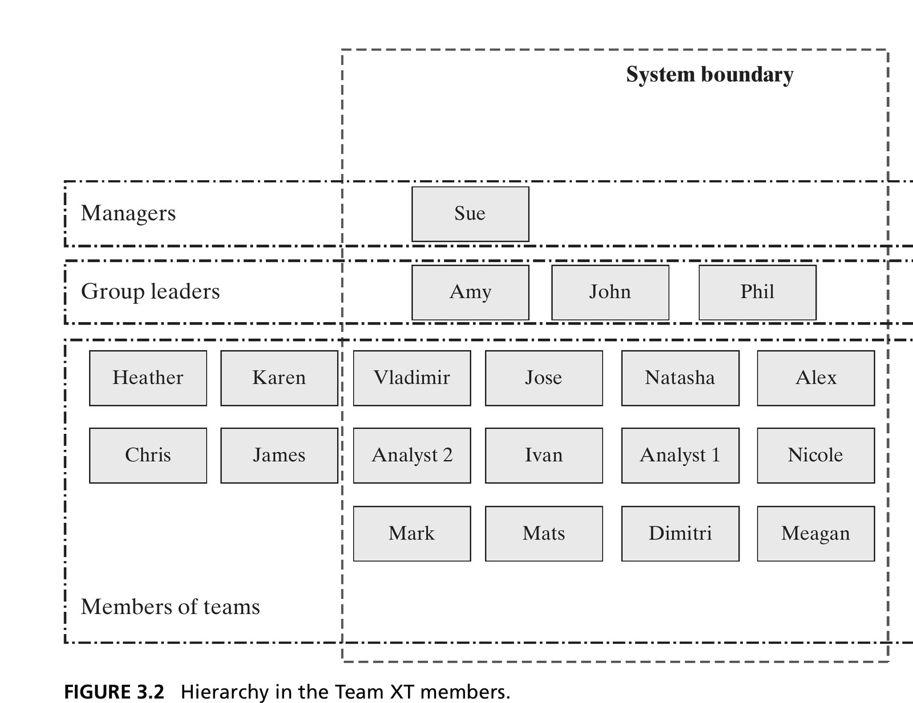
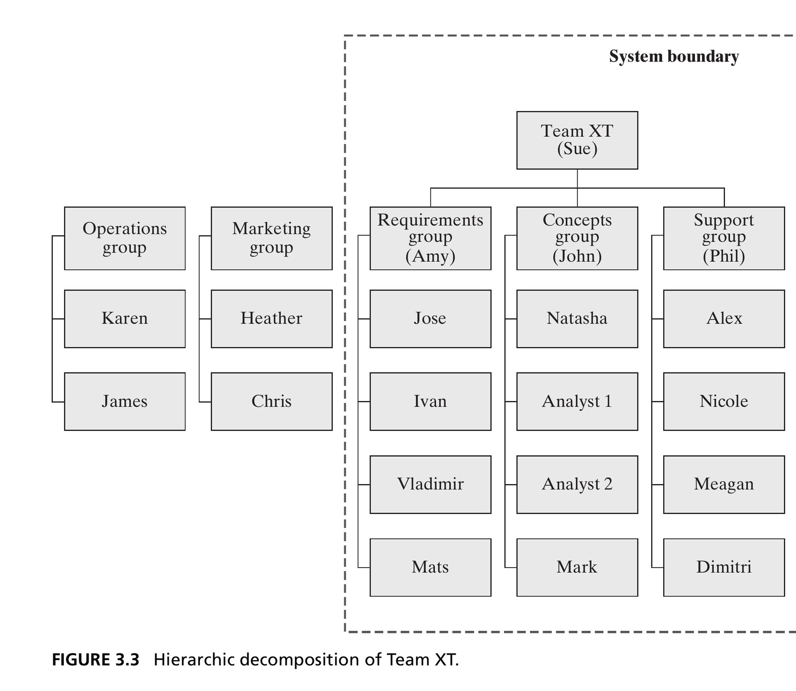
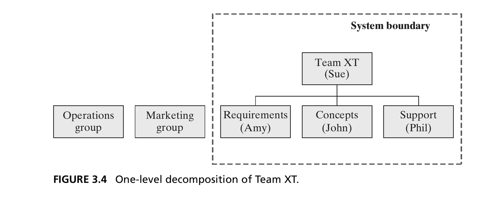
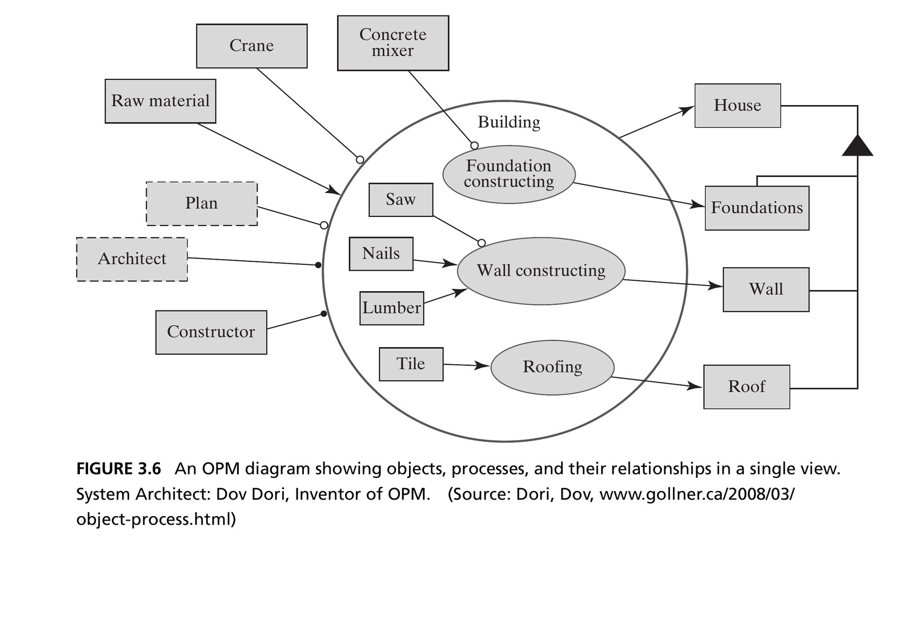

Thinking about Complex Systems
Systems Architecture · Chapter 3
From Simple to Complex
- Chapter 2 deliberately used simple systems — two or three entities — to focus on the ideas: form, function, entities, relationships, emergence
- Most systems we build and work with professionally are complex
- This chapter extends system thinking with tools for complexity:
- Decomposition and hierarchy
- Special logical relationships (class/instance, specialization, recursion)
- Techniques for reasoning through complex systems
- An introduction to SysML and OPM
Box 3.1 · Definition: Complex System
A complex system has many elements or entities that are highly interrelated, interconnected, or interwoven.
- The fuzziness of the word “many” is deliberate
- Complexity is driven into systems by asking more of them: more function, more performance, more robustness, more flexibility
- It is also driven in by asking systems to work together and interconnect — your car with the traffic control system, your house with the internet
Complex ≠ Complicated
Complex
An intrinsic property of the system: many interrelated, interconnected entities and relationships.
Complicated
A property of human perception: something overwhelms our ability to understand it. High apparent complexity.
Build systems of the necessary level of complexity that are not complicated.
This is our job as architects: to train our minds to understand complex systems so they do not appear complicated to us — or to anyone else who must work on the system.
Introducing Team XT
- Team XT is an extended version of Team X from Chapter 2 — same role (producing a design), more entities
- Walking through Task 1: the system is still the group of people and the process responsible for developing the design
- Form = the people. Function = developing a design.
- Determining each member’s function requires observation, experience, or interviews — the book tabulates all 18 people in Table 3.1, along with their formal structure (location, connectivity, reporting) and functional interactions
Figure 3.1 · Function and Interaction in Team XT

The “value pathway” runs down the center; supporting entities (IT, coaching, admin, finance) flow in from the right; Marketing and Operations sit outside the system boundary. Source: Crawley, Cameron & Selva (2016), Fig. 3.1.
Decomposition: Divide and Conquer
- Decomposition: dividing an entity into smaller pieces or constituents — one of the most powerful tools for dealing with complexity
- “Divide and conquer”: break a problem down until each piece is tractable
- The difficulty isn’t in the breaking apart — it’s in integration, bringing the decomposed entities back together to build the whole
“All Gaul is divided into three parts.”
— Julius Caesar, The Gallic Wars
In the formal domain, form aggregates — we worry about physical/logical fit. In the functional domain, we decompose functions into more basic functions — and recombining them is where we encounter emergence: the real challenge.
Hierarchy
- Hierarchy: a system in which entities belong to layers or grades, ranked one above the other — very common in social systems
- What makes one grade rank above another?
- More scope — a governor outranks a mayor (a state is larger than a city)
- More importance or performance — a black belt outranks a brown belt
- More responsibility — a president outranks a vice president
Hierarchy is not always obvious from a functional-interaction diagram like Figure 3.1 — it took a separate view (Figure 3.2) to reveal that Sue outranks Amy, John, and Phil, who outrank everyone else.
Figure 3.2 · Hierarchy in Team XT

Three flat layers — managers, group leaders, members — with no reporting structure implied within a layer. Source: Crawley, Cameron & Selva (2016), Fig. 3.2.
Hierarchic Decomposition
- Often, decomposition and hierarchy combine into a hierarchic decomposition: more than two levels, with reporting relationships between them
- Cognitively more satisfying than an undifferentiated flat layer — it appeals to our desire to group things in sets of seven ± two
- The “group” (Requirements / Concepts / Support) is a useful abstraction — but not the only way to decompose the team. We could have clustered by location, connectivity, or functional relationship instead.
Figure 3.3 · Hierarchic Decomposition of Team XT

Three group leaders reporting to Sue, about four people reporting to each leader. Source: Crawley, Cameron & Selva (2016), Fig. 3.3.
Simple, Medium, and Complex Systems
- Simple system: fully described by a one-level decomposition — generally no more than 7 ± 2 elements, which are essentially atomic (Figure 3.4)
- Medium-complexity system: a two-level decomposition, up to about (7 ± 2)² ≈ 81 entities (Figure 3.3)
- Complex system: same two-level diagram as medium-complexity — but at the second level, there are still further abstractions of things below

Figure 3.4: one-level decomposition of Team XT. Source: Crawley, Cameron & Selva (2016).
Tip
One rarely sees a decomposition diagram more than two levels deep: a third level could hold up to 729 elements — far more than humans can routinely process.
Level 0, 1, and 2 — and Atomic Parts
- We refer to Level 0 (“the system”), Level 1 (down), Level 2 (down) — the designation of Level 0 is somewhat arbitrary and depends on the architect’s viewpoint
- There is little consensus on names for the levels below “the system” (modules, assemblies, components, routines, sections…) — one person’s assembly is another’s component
Atomic part: from Greek átomos, “indivisible.”
- Mechanical systems: “Call it a part when you can’t take it apart.”
- Informational systems: “Call it a part if it loses meaning when you take it apart.”
3.4 Special Logical Relationships
The Class/Instance Relationship
- A class describes the general features of something; an instance is a specific occurrence of that class
- A model of a car is a class; a specific Vehicle Identification Number (VIN) is an instance
- A part number refers to a class; a serial number refers to an instance
Tip
Table 3.1 has two “Analyst” entities — we could instead define a class Analyst, with Analyst 1 and Analyst 2 as its instances. The 11 players on a soccer team and the 88 keys of a piano are instances of the classes “Player” and “Key.”
The Specialization Relationship
- Specialization/generalization describes the connection between a general object and a set of more specific objects
- Shopping for a house: the general object is “House,” and specific objects are styles — colonial, Victorian, modern
- In Team XT, we created three specializations of the generalization “Group”: a requirements group, a design (concepts) group, and a support group
Specialization is akin to inheritance in object-oriented programming: a class is created from a more general class, inheriting some attributes and functionality while adding its own.
Recursion
- Recursion: when a process or object uses itself within the whole — entities or relationships applied in a self-similar way at multiple levels
- Team XT: the whole team is a team of people; within it, three groups are each mini-teams — a mild form of recursion
- Software engineering uses recursion explicitly and often: a class
Nodewith an attributeNeighborsthat is itself an array ofNodes
3.5 Reasoning through Complex Systems
Top-Down / Bottom-Up / Middle-Out
Top-down
Start from the goals of a system, proceed to concept and high-level architecture, then increase detail until reaching the smallest entities of interest. Follows the “left-hand side” of the systems-engineering V model.
Bottom-up
Start from the artifacts, capabilities, or services available at the lowest-level entities, and build upward, predicting emergence.
Middle-out
Because truly complex systems have no real top or bottom, we always start somewhere in the hierarchy and reason a level or two up or down from there.
Zigzagging
- Term coined by Nam Suh in his work on axiomatic design
- When reasoning about a system, we alternate between the form domain and the function domain — start in one, work as long as practical, then switch
- Team XT example: we started in the function domain (“design developing”), switched to form (small groups), then switched back to function (what each group does) — and this pattern continues down through the levels
Tip
Good architects practice top-down, bottom-up, and middle-out reasoning, zigzagging between form and function throughout.
3.6 Architecture Representation: OPM
Views and Projections
A description of a complex system’s architecture contains more information than any one person can readily comprehend.
Integrated model + projections: build one consistent model, then project it into whatever view is needed (floor plan, façade, section) — like modern 3D CAD. Views are guaranteed consistent because they come from the same model.
This course uses OPM (Object-Process Methodology), which follows the integrated-model approach.
OPM
- Object-Process Methodology — developed by Professor Dov Dori at Technion, unifying object- and process-oriented paradigms into a single model
- Objects (boxes) and processes (ovals) appear together in one integrated diagram, connected by typed relationships — an object can be an instrument of a process, or can be changed by a process
- No separate views: form and function, and every logical relationship, are all represented in a single model
Figure 3.6 · An OPM Diagram

Building a house: objects (Crane, Lumber, Foundations…) and processes (Foundation constructing, Wall constructing, Roofing) in one view. System Architect: Dov Dori, inventor of OPM. Source: Dori, D., gollner.ca (2008), reproduced in Crawley, Cameron & Selva (2016), Fig. 3.6.
OPM Representations
OPM has its own visual conventions for the logical relationships from Section 3.4:
| Relationship | OPM Notation |
|---|---|
| Decomposition / aggregation | Triangle-headed tree |
| Specialization / generalization | Open-triangle tree |
| Class / instance | Instance nested inside the class box |
Tip
This course uses OPM as its architecture representation tool throughout.
Section 3.7 Summary
| Feature of Complex Systems | Approach |
|---|---|
| Can be decomposed into smaller, more specialized entities | Decompose; identify hierarchy; continue to ~2 levels or atomic parts |
| Certain logical relationships recur among entities | Identify class/instance; identify specialization/generalization; identify recursion |
| Patterns of relationship can be exploited when reasoning | Top-down/bottom-up/middle-out; zigzag between form and function |
| Architecture can be viewed or projected for understanding | Project from a single integrated model (OPM) |
Next: Form
Part 2 — Analysis of System Architecture — begins with Chapter 4, developing form and function as the building blocks of architecture in depth.
Tip
Reference: Crawley, E., Cameron, B., & Selva, D. (2016). System Architecture: Strategy and Product Development for Complex Systems. Pearson. Chapter 3.

← Course Home · Systems Architecture · Chapter 3